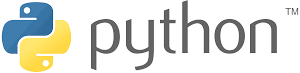

What is Python?

Building Desktop Applications With Tkinter
PyBlog is a Python Blog Website created by RangerRhino23 as a fun small programming project. There are many different stories and projects you can read about and create!
To get started, click on one of the
blogs below!
What is Python?
Building Desktop Applications With Tkinter